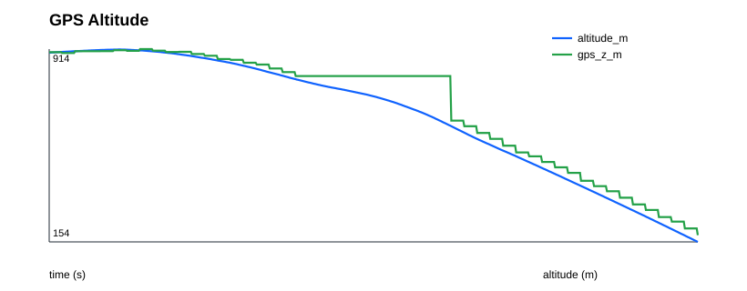
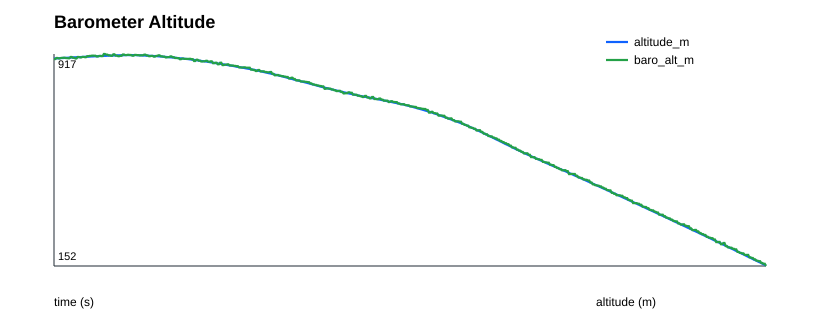
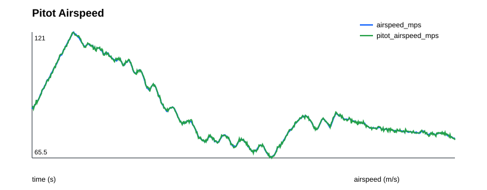
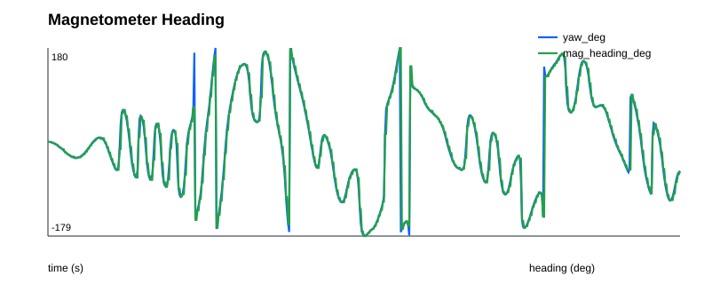
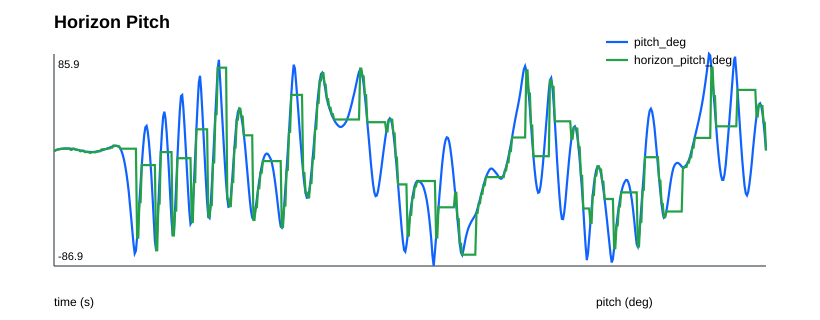
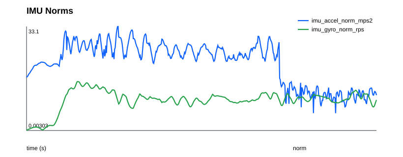

Sensor Report
Sensor measurements compared against simulator truth channels.
Error Metrics
| samples | 601 |
|---|---|
| gps_valid_fraction | 0.780366 |
| barometer_valid_fraction | 1 |
| pitot_valid_fraction | 1 |
| magnetometer_valid_fraction | 1 |
| radar_valid_fraction | 1 |
| optical_flow_valid_fraction | 0.201331 |
| horizon_valid_fraction | 0.520799 |
| imu_accel_norm_mean_mps2 | 21.4952 |
| imu_gyro_norm_mean_rps | 9.66207 |
| gps_position_rmse_m | 46.5929 |
| gps_velocity_rmse_mps | 7.16949 |
| barometer_altitude_rmse_m | 2.47021 |
| pitot_airspeed_rmse_mps | 0.385089 |
| radar_agl_rmse_m_flat_terrain | 1.89897 |
| magnetometer_heading_rmse_deg | 11.7917 |
| horizon_roll_rmse_deg | 12.1808 |
| horizon_pitch_rmse_deg | 6.28955 |
Valid-Flag Transitions
| Sensor | Transitions |
|---|---|
| baro_valid | 0 |
| gps_valid | 2 |
| horizon_valid | 54 |
| imu_valid | 0 |
| mag_valid | 0 |
| optical_flow_valid | 1 |
| pitot_valid | 0 |
| radar_valid | 0 |
Plots





